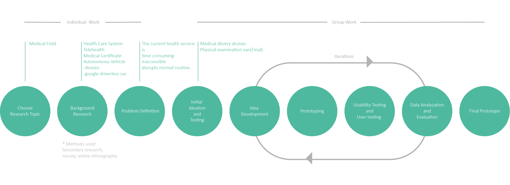

Portfolio - Vannie
Concept
Vannie is a mobile app that connects users to an autonomous van which enable self physical examination at the appointed time and position. Our aim is to use this innovative solution to improve the medical experience, making health service more accessible and time-saving. By using Vannie, users can get physical examination anytime, anywhere they like, no more traveling needed nor disruption to their daily routine.
Final prototype
Vannie lets you get physical examination without travelling to a medical centre. Vannie keeps record of your physical examination results, think of it as your personal health assistant, Vannie gets your body checked and helps you to keep track of your body condition.
There are essentially four steps for booking a van:
- Signup
- Order
- Payment
- Review
The whole booking process is designed to be a linear process, so that users are able to follow through even they are not being clear-headed.
Color Schematic
Green： #4FB99F - A trustworthy and soothing color
Orange: #ED553B -Used to notify important decision
Typography
SF Pro Text-regular
SF Pro Text-semibold
Logo Design
The logo of Vannie is designed using the shape of red cross, and the concept of driveway.
Screens
It is essential to confirm user's identity due to the personal privacy and the reliability of the results. And users can upload all their information in the sign up page.
It includes all the details (checking components, address, date) users need to input in one page. Users are able to review and change the detail in anytime.
It allows users to view and check their reminders and orders anytime, anywhere. User can also cancel their booking in advance if there is an emergency.
Role
First Author
The idea of a physical examination was first generated by me and details were further developed with my group.
User Research and Testing
I consistently attended each round of user research and testing, actively talking to passers-by and inviting people to participate. I analyzed and visualized most data,constantly came up with different ways of improvement.
Initial Prototyping
I did two rounds of intial protytyping by sketch on paper and put into POP for testing. As a group we drew out the wireframe of final prototype and further developed by Sina.
storyboard

Overview of the Entire Process

Important Design Decisions
Video Consultation
As a group we went through several times of discussion about if we needed more function in our app such as online video consultation and personal profile. There are pros and cons. Have more function can provide users a more comprehensive experience, however, we came to agreement that mobile app is too small in size for a proper video consultation. Moreover, we wanted to focus on the booking system and review of the results at this stage.
Camera
Identity authentication was a important part of this service in order to provide reliable and trustworthy health report. We have different opinions about the camera placement. Initially, we were using facial recognition on users’ mobile phone to unlock the door. However, users could potential unlock the door miles away from the van. Therefore, we ended up placing the camera on the van. Considering public privacy, we added the confirmation of arrival button to turn on the camera only when users arrives at the van.
Paging
An significant finding in the early testing stage was that app design if quite different from websites, it only holds and display certain amount of information on one page. Overloading the screen distracts users’ attention, moreover, making the whole process unclear. We spent a lot of time working on what elements go onto what pages, so that it is easy to follow through.
Reflection
Personally, I feel our app would definitely solve the problem addressed. With Vannie aiding the online video consultation, the result would be more accurate. Later on, with this service, people are able to see a doctor without going to medical center, thus, a more accessible and less time consuming experience.
As far as what we’ve done, the app has a minimalist design. However, it could have been looking more professional with more work done in improving the spacing and placement of each element.
Next step would be exploring more functions which could be achieved in a mobile app, such as a user profile, which stores user information. Moreover, visualizing the changes in users’ body condition.
Reference
Bruce, D. Camioneta van forma negra en dirección derecha icono gratis [Image]. Retrieved from https://www.flaticon.es/icono-gratis/camioneta-van-forma-negra-en-direccion-derecha_26891
Galle, K., Pimento, J., & Design, U. (2017). Wires, free wireframe kits for Adobe XD [Image]. Retrieved from https://www.behance.net/gallery/55462459/Wires-wireframe-kits-for-Adobe-XD
kisspng. Computer Icons Symbol Clip art - upload [Image]. Retrieved from https://www.kisspng.com/png-computer-icons-symbol-clip-art-uploaded-1295823/preview.html
wikipedia. (2018). wikimedia - calendar [Image]. Retrieved from https://upload.wikimedia.org/wikipedia/commons/3/3e/Calendar_2018_05.png